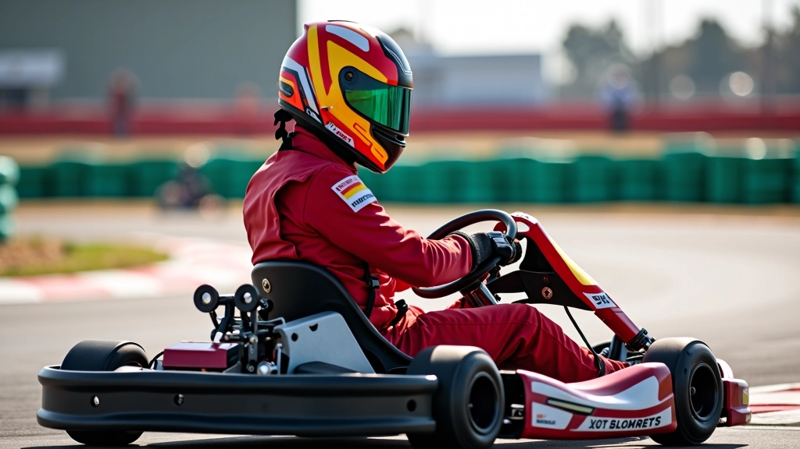
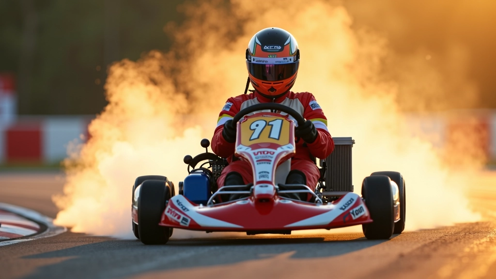
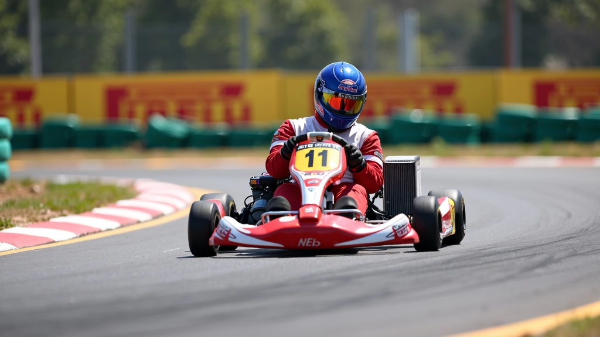
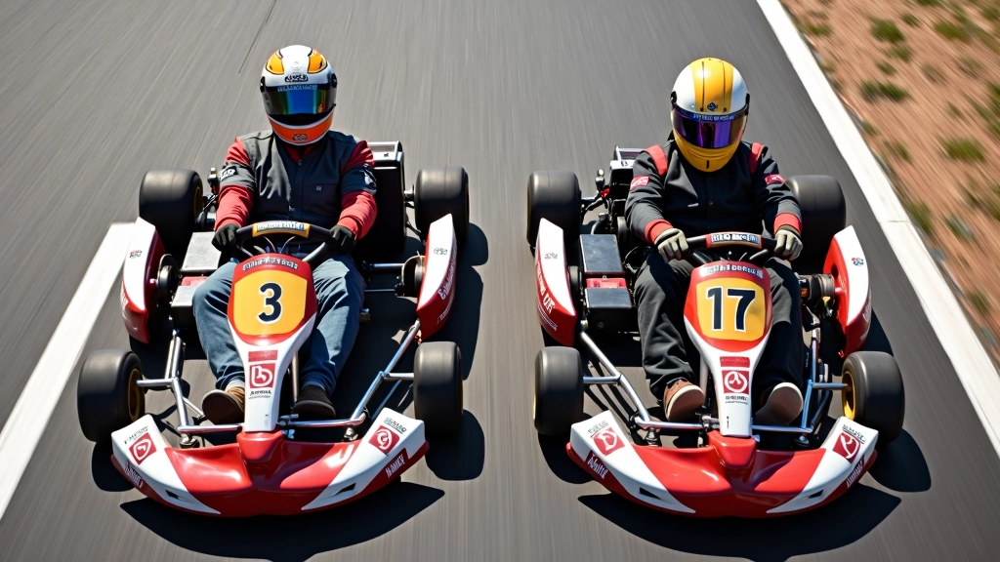
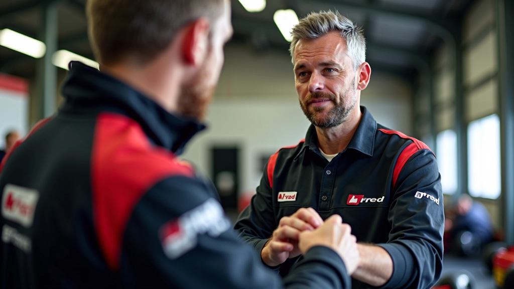

كيفية تحقيق الانطلاقة المثالية من الشروع
شرح مفصل لكل مراحل الانطلاقة الصحيحة بدءاً من وضعية الجسم وانتهاءً بلحظة تجاوز خط البداية بقوة


فريق المراجعة التحريري
كتبه فريق تقنيات الانطلاقة التحريري، المتخصص في شروحات عملية وسهلة المتابعة.
لماذا تعتبر الانطلاقة حاسمة
الانطلاقة من خط البداية هي اللحظة الأهم في أي سباق كارتينج. في جزء من الثانية، يتم تحديد موقعك النسبي مقابل المنافسين الآخرين. لو لم تحصل على انطلاقة جيدة، فستقضي السباق كله تحاول اللحاق بهم. والعكس صحيح — انطلاقة قوية تعطيك ميزة نفسية وفعلية منذ البداية.
الفرق بين الانطلاقة الجيدة والسيئة قد يكون أقل من ربع ثانية، لكن في السباقات الضيقة هذا يعني كل شيء. نحتاج إلى فهم المراحل الثلاث: الإعداد، التركيز، والتنفيذ.

المرحلة الأولى: الإعداد الجسدي
قبل أن تسمع صفير الانطلاقة، عليك أن تكون مستعداً جسدياً وعقلياً. الجلسة الصحيحة هي أساس كل شيء. ظهرك يجب أن يكون مستقيماً لكن ليس متيبساً — قليل من الانثناء الطبيعي للعمود الفقري يساعدك على امتصاص الصدمات والتحكم بشكل أفضل.
يديك على عجلة القيادة يجب أن تكون في وضع 9 و 3 (أو 10 و 2)، مع قبضة ثابتة لكن ليست مشدودة جداً. التوتر الزائد يستهلك طاقتك بلا فائدة. الأرجل؟ قدمك اليسرى على الفرامل، واليمنى في وضع حيادي بالقرب من دواسة التسريع. نعم، هذه تفاصيل صغيرة. لكنها تصنع الفرق.
نصيحة ذهبية
تنفس بعمق قبل الانطلاقة بـ 3 ثوان. هذا يهدئ جهازك العصبي ويحسن ردات فعلك. الرياضيون المحترفون يفعلون هذا دائماً.
المرحلة الثانية: التركيز العقلي
الآن يأتي الجزء الصعب — التركيز المطلق. في هذه اللحظة، يجب أن تكون عقلك فارغاً من كل شيء سوى ثلاثة أشياء: الإشارة، الدواسات، والطريق أمامك مباشرة. لا تفكر في السباق السابق أو السباق القادم. لا تفكر في المنافسين على جانبيك. فقط الآن.
انتظر الإشارة. تعلم قراءة حركة جسم المسؤول — يرفع يده، يخفضها، ثم تسمع الصفير أو ترى الضوء الأخضر. معظم السائقين يفقدون أول ربع ثانية لأنهم يتفاعلون مع الإشارة بدلاً من توقعها. الفرق بين الرد والتوقع هو 100-150 ميلي ثانية. هذا كثير جداً.


المرحلة الثالثة: التنفيذ والدفع
عندما تسمع الإشارة، لا تتردد. حرر الفرامل بسلاسة وادفع دواسة التسريع في نفس الوقت تقريباً. هذا هو السر — يجب أن يحدثا معاً، وليس بالتسلسل. إذا حررت الفرامل أولاً ثم سرعت، فقدت ميلي ثوان ثمينة.
اضغط على التسريع تدريجياً. قد تبدو غريبة، لكن الضغط الكامل على الدواسة فوراً قد يسبب دوران العجلات الخلفية — وهذا يعني انزلاق، وفقدان قوة دفع. ما تريده هو تسريع منتظم حتى تصل إلى أقصى سرعة. في ثانيتين تقريباً، يجب أن تكون على التسريع الكامل.
خطوات الانطلاقة المثالية
الاستقرار والتركيز
ادخل خط البداية مستقيماً. يديك على العجلة، أرجلك جاهزة، وعقلك مركز على الإشارة.
القراءة والتنبؤ
راقب المسؤول وتوقع اللحظة. ركز على حركته الجسدية، ليس على الصوت (الصوت يتأخر عن الحركة).
التحرر والتسريع
حرر الفرامل وابدأ التسريع معاً. تدرج الضغط على الدواسة حتى تصل للكامل في ثانيتين.
الخط المستقيم والحفاظ
حافظ على الخط المستقيم. لا تحول مبكراً نحو المنحنى الأول. السرعة الخطية أفضل من الانحراف المبكر.

الأخطاء الشائعة التي تفسد الانطلاقة
أول خطأ؟ الضغط الزائد على الفرامل قبل الإشارة. بعض السائقين يضغطون على الفرامل عندما يدخلون خط البداية — هذا يهدر قوة دفع لا تحتاجها. الفرامل يجب أن تكون في وضع "جاهز" فقط، وليس مشدودة.
الخطأ الثاني هو التسريع المبكر. تحديداً قبل الإشارة الفعلية. بعض السائقين يحاولون الغش بالضغط على التسريع نصف ثانية مبكراً. المسؤولون يلاحظون هذا ويعطيك "إطلاق خاطئ" — انطلاقة جديدة بدون أي تقدم لك. كل ما فعلته هو إهدار الطاقة.
الخطأ الثالث هو الحركة الجانبية. بعض السائقين يحركون العجلة قليلاً نحو اليسار أو اليمين أثناء الانطلاقة — ربما لتجنب سيارة أخرى أو من قلق. هذا يقتل السرعة. ابق مستقيماً.

نصائح عملية للتدريب
- مارس الانطلاقة 10 مرات قبل السباق الفعلي. في كل مرة، ركز على جزء مختلف — الجلسة، التركيز، التنفيذ.
- سجل نفسك على فيديو. تحقق من حركتك — هل يدك تتحرك قبل الإشارة؟ هل جسمك مستقيم؟ التفاصيل مهمة.
- لا تقارن نفسك بسائقين آخرين. كل شخص له إيقاع مختلف. ركز على تحسينك الشخصي.
- جرب تقنيات تنفس مختلفة. بعض السائقين يأخذون نفس عميق، آخرون يتنفسون بسرعة. اكتشف ما يناسبك.
الخلاصة: الانطلاقة الممتازة ممكنة للجميع
الانطلاقة المثالية ليست موهبة وراثية — إنها مهارة. يمكنك تطويرها من خلال الفهم الصحيح والتدريب المنتظم. الخطوات الثلاث (الإعداد، التركيز، التنفيذ) بسيطة على الورق، لكنها تتطلب الانتباه والممارسة.
ابدأ صغيراً. في السباق القادم، ركز فقط على الإعداد الصحيح. عندما تتقن هذا، أضف التركيز العقلي. ثم عمل على التنفيذ. خطوة بخطوة، ستحسن انطلاقتك. وعندما تحصل على انطلاقة قوية مرة واحدة، ستعرف بالضبط كيف تكررها.
ملاحظة مهمة
هذا المقال يقدم معلومات تعليمية عن تقنيات الانطلاقة في الكارتينج. النصائح المذكورة تعتمد على الممارسات الشائعة والتجارب العملية. كل سائق فريد، والظروف قد تختلف. نوصي بالعمل مع مدرب متخصص لتحسين تقنيتك الشخصية. السلامة أولاً دائماً — تأكد من اتباع جميع قواعد المضمار وإرشادات السلامة.